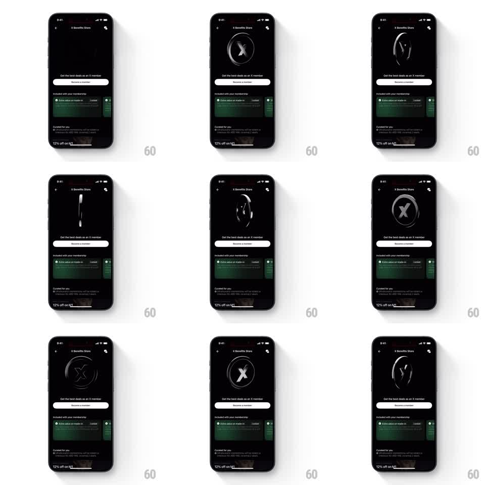

Media
Frame-by-frame

Rebuild this animation 1:1: Ultrahuman's membership badge - a metallic circular X coin spins continuously on its vertical axis over the dark benefits store, light sweeping its face with every pass.

Rebuild this animation 1:1: Ultrahuman's membership badge - a metallic circular X coin spins continuously on its vertical axis over the dark benefits store, light sweeping its face with every pass. ## Integration Integration: stack-agnostic spec - springs given as stiffness/damping, timed motions as duration + curve; map every value to your framework and animation library of choice. ## Scene Dark "X Benefits Store" screen: back/share icons, the spinning badge center, "Get the best deals as an X member" + Become a member button, membership benefits cards below. ## Motion spec Pattern: 3D coin spin, ~3s per rotation. - The badge rotates continuously around its vertical axis (linear, seamless loop) with real 3D thickness - a metallic rim visible at edge-on frames. - A specular highlight sweeps across the face as it turns; the X emblem on the face foreshortens correctly with perspective. - The back face mirrors the front (same emblem) so the spin never shows a blank. - Everything below the badge is static. ## Calibration - Constant angular velocity; easing a loop reads as a wobble. - Perspective ~1200px equivalent - enough to sell the coin's thickness without warping the emblem. ## Reduced motion Static three-quarter view of the badge with a slow sheen drift (4s cycle). ## Don't miss - The badge must have a rim - a flat disc reads as a rotating PNG at edge-on. - Keep the spin axis exactly vertical; any precession reads as a defect.